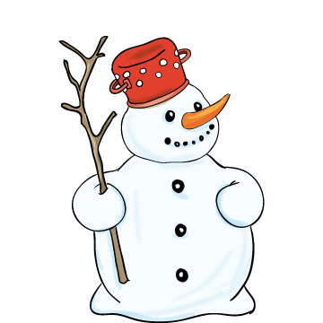

Mit lá-tott az é-hes cin-ke?
1. má-sik cin-két
2. fi-nom ré-pa-or-rot
3. fa-zék fej-fe-dőt
Mit kért a cin-ke?
1. ha-jót
2. haj-lé-kot
3. en-ni-va-lót
Mi-kor ta-lál-koz-hat új-ra a cin-ke és a  ?
1. hol-nap
2. jö-vő té-len
3. so-ha-sem